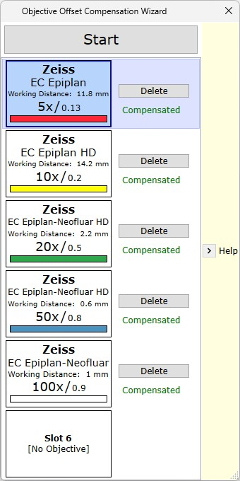

|
物镜补偿向导
|
物镜补偿向导可用于补偿不同物镜之间的小位移。
根据 X/Y 样品定位器和 Z 台是否为电动，补偿将在所有三个空间轴上进行。
要启动物镜补偿向导，请通过 主菜单 打开对话框：

单击 帮助 以查看逐步指导。
向导显示所有已配置的物镜。可单击某个物镜来选择它，并将 X/Y/Z 轴移动到所需位置（例如样品上的某个特定特征）。
按 开始校准 以告诉软件从现在开始应为每个物镜存储所有偏移。如果要移动样品而不保存位移，请先按停止校准。
补偿在选择另一个物镜或关闭对话框时自动存储。